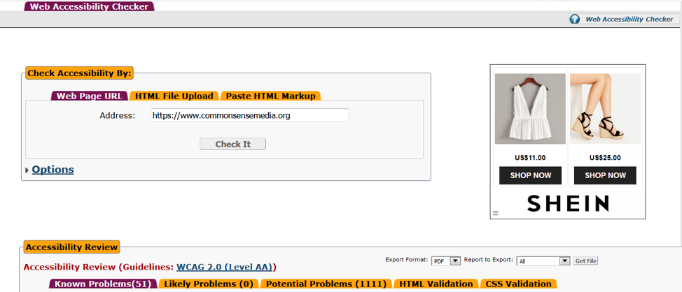

A few people shared with me they never thought of accessibility until someone asked them about it. I believe this holds true for many people. We take for granted our basic abilities of sight and hearing. We then, unknowingly, neglect to consider the difficulties others who do not have the same abilities would encounter as they navigate through their everyday lives. As digital screen technology continue to gain prevalence in our daily activities, it is imperative for web developers and designers to take into consideration how someone without sight or hearing can use their website.
This week I evaluated for accessibility the same website I analyzed in my first post for usability, commonsensemedia.org. The site’s purpose is to provide parents and educators with information, reviews, and guidelines on the different types of media available. The website’s aim is to help parents and educators make informed decisions about the media kids encounter. They do this with reviews from adults and kids along with attributing different ratings on the media, such as age appropriateness, type of message, violence, sex, language, etc.
Accessibility Checker
I used the WCAG 2.1 at a Glance as reference standards for my evaluation. I then used a free accessibility checker from the University of Toronto. The Accessibility Checker is an open source web accessibility evaluation tool that was developed in 2009 by the Inclusive Design Research Centre of the University of Toronto. With this tool, the user can submit a web page via its URL or by uploading its HTML file. I used the tool to evaluate the commonsensemedia.org site against the WCAG 2.0 guidelines.
Screenshot of the Accessibility Checker results taken May 2, 2019:
The report on potential problems listed the lack of text alternatives for non-text content as the majority of the problems. The website is image heavy with most images lacking alternative text descriptions. Another potential problem is distinguishability, namely is it easy for users to see and hear content? The checker recommends separating the foreground and backgrounds. The report also listed flashing images may cause seizures, it recommends using images that contain three or less flashes.
Conclusion
From the accessibility checker many problems and potential problems can be resolved through the addition of text help users. Because the site is image heavy, using the checker's recommendation to "Add text to the element or the title attribute of the element or, if an image is used within the anchor, add Alt text to the image." will solve the majority of problems. The checker also recommended that the site incorporate content that can be presented in different ways using a simpler layout. Again, this can be achieved through adding a label to the elements.
From this analysis, I find that it will take a conscious effort to make a website accessible. If the site relies on images, it will take time to add descriptions to each image. However, in the scope of web development, adding texts to elements is an easy task. Making accessibility a part of web design will open your site to a wider population of users. Ultimately, isn't that a desired goal of a website?